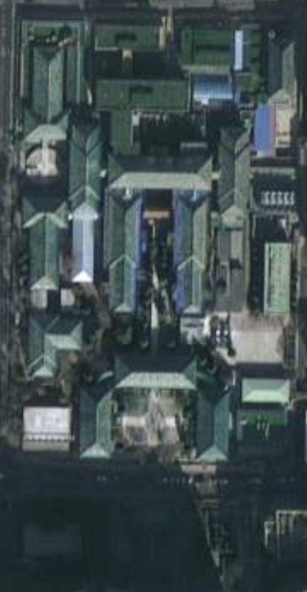

A CENTURY OF MEMORY
老楼 · 建筑群
走进百年空间，在一砖一瓦间读懂协和。
01点击地图上的楼号
探索一处建筑记忆
探索一处建筑记忆

可探索地点
A–P 楼点位参照总平面图
A–P 楼名参照老楼总平面图，地图点位按卫星图可见建筑对应；建筑细部与具体房间请以院方资料为准。
A CENTURY OF MEMORY
走进百年空间，在一砖一瓦间读懂协和。

A–P 楼名参照老楼总平面图，地图点位按卫星图可见建筑对应；建筑细部与具体房间请以院方资料为准。